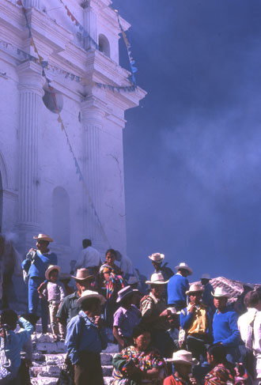

|  | Honorable Mention Chichicastenango, Guatemala Market day on the steps of the Church of Santo Tomas. Shamans burn incense on the church steps. Christmas fiesta flags fly on the facade. Not one of the people on the steps is looking directly at the photographer, for surely to take one’s picture is to steal one’s soul. And yet, if today we could glimpse behind the lens, what these people so carefully did not quite see, we would find a young couple at least as colorful, as strange, and foreign, to this world of the 21st century… orange bell-bottoms and all. |